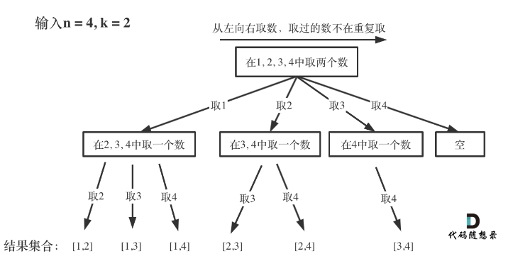
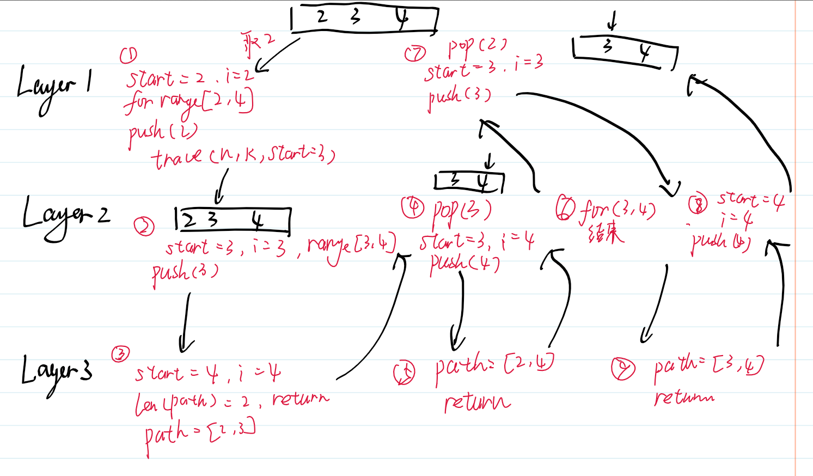
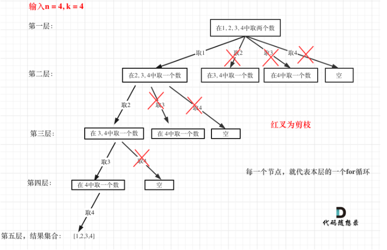

回溯之组合问题
首先我们从题出发，题目来自leetcode77题：
给定两个整数 n 和 k，返回范围 [1, n] 中所有可能的 k 个数的组合。
你可以按 任何顺序 返回答案。
输入：n = 4, k = 2
输出：
[
[2,4],
[3,4],
[2,3],
[1,2],
[1,3],
[1,4],
]我们知道，回溯本身就是一种暴力搜索的方法，在组合问题中，回溯法能够帮助省略许多for循环。以这题为例，我们可以借助两层for循环，来遍历组合。
for i in range(1,n+1):
for j in range(i+1,n+1):
res.append([i,j])但for循环的层数会随着k的增大而变多，若k为10，就需要十层for循环来遍历各种组合，这显然非常麻烦，并且在数据量上去后计算复杂度非常恐怖。时间复杂度为
所有的回溯算法都可以抽象成一个树形结构。这里借用一下代码随想录在题解中的图。

每一条路径都是一个组合，结果存储在叶子结点。树的深度在这里就代表K，而n则代表树的宽度。
实现
class Solution:
def combine(self, n: int, k: int) -> List[List[int]]:
res = []
path = []
def backtrace(n,k,start):
if len(path) == k:
res.append(path[:])
return
for i in range(start,n+1):
path.append(i)
backtrace(n,k,i+1)
path.pop()
backtrace(n,k,1)
return res接下来逐步分析这段代码。
res = []
path = []这一段定义了两个变量，res存储所有组合的结果，path则代表某一条路径的结果，也就是某个组合。
def backtrace(n,k,start):
if len(path) == k:
res.append(path[:])
return这一段定义了一个closure函数，实现了递归的结束，也就是当path中的元素已经达到k个的时候，当前path递归结束。
for i in range(start,n+1):
path.append(i)
backtrace(n,k,i+1)
path.pop()这一段主要实现了同层递归的逻辑，保证从初始数组中从start开始左向右取数字。首先我们将当前的元素加入栈中，然后以此为根向下递归，递归函数的start需要比上一层大1，直到深度达到k时递归返回。之后将当前的根pop出去，保证路径不会重复取到。举一个例子，假设当前的start为2，先把2push进path中，此时path=[2]，这是第一层递归。然后继续往下，此时的start为3，同样push进path，path=[2,3]，这是第二层递归。继续递归到第三层，此时start=4，path里已经有两个元素，所以递归返回至第二层，此时path=[2,3]，那么会pop出3。继续for循环，此时i=4，递归为第三层，path长度为2，返回至第二层，继续pop出4。for循环完毕，函数结束返回至第一层，path为[2]，由于递归结束，那么会继续pop出2，之后就从3开始。如果觉得很复杂的话，用一张图来解释。

易错
res.append(path[:]) -> res.append(path) 这样是不行的，因为path是引用加入res的话，会因为后续path的增删而改变。
backtrace(n,k,i+1) -> backtrace(n,k,start+1)首先，这样会导致不同顺序的相同组合被加入，如[4,2]。其次，这样会让相同元素的组合被加入，如[2,2]。
剪枝
这里还是借用一下代码随想录中题解的图。

而原本的for循环为：
for i in range(start,n+1):区间为[start,n]，如果剩下的元素不足以填满k个元素，那么就没有递归的必要。总共需要k个元素，当前有len(path)个元素，那么就还需要k-len(path)个元素。倘若剩余的元素不足k-len(path)个，则无须继续。所以，最后一次的for循环应该从n-(k-len(path))+1处开始。
举一个具体的例子，假设区间为[1,9]，k=4，最后一次满足k等于4的循环应该是从6开始，path=[6,7,8,9]，所以我们需要从9-4+1=6开始。整理后，
for i in range(start,n+1-(k-len(path))+1):其他题目
Leetcode 216
找出所有相加之和为 n 的 k 个数的组合，且满足下列条件：
- 只使用数字1到9
- 每个数字 最多使用一次
返回 所有可能的有效组合的列表 。该列表不能包含相同的组合两次，组合可以以任何顺序返回。
本题和本章最初的题目除了递归退出和剪枝的逻辑以外完全一致，只需要在退出逻辑中将path加入res之前加一个判断，来判断是否sum(path) == n。而剪枝操作则是当前path的和大于n，那后面也没有进行的必要了。